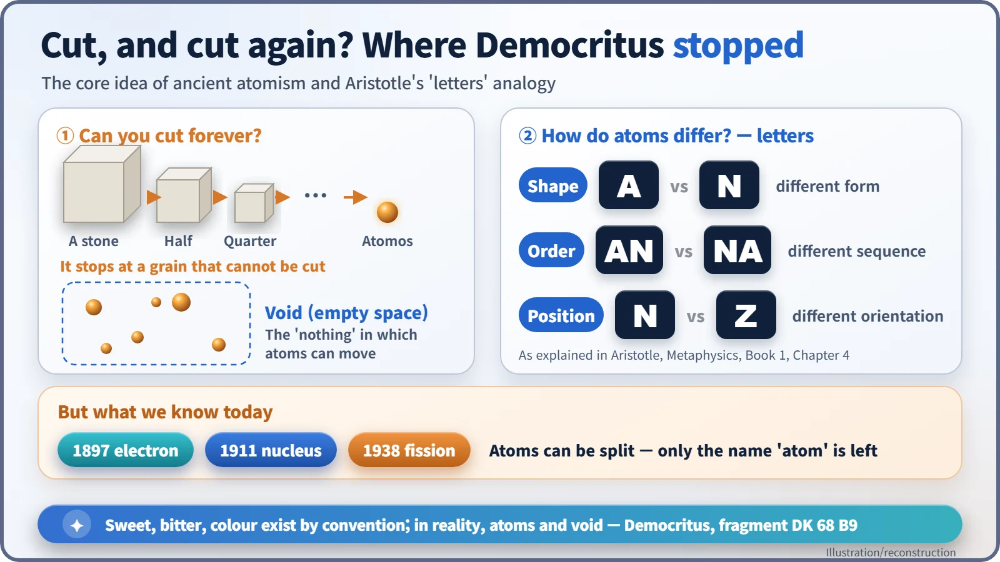
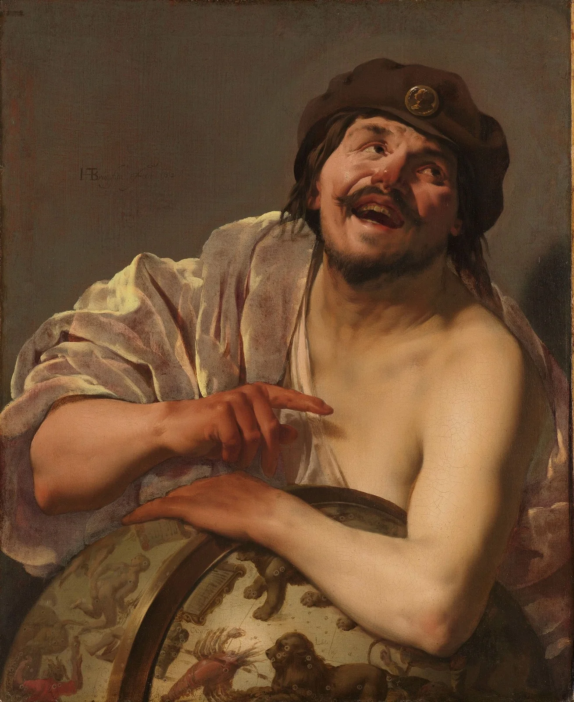
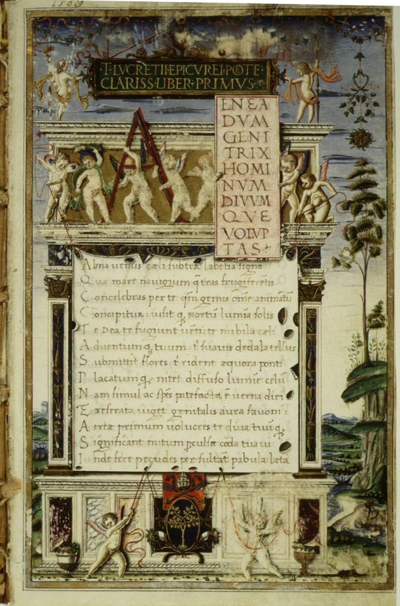
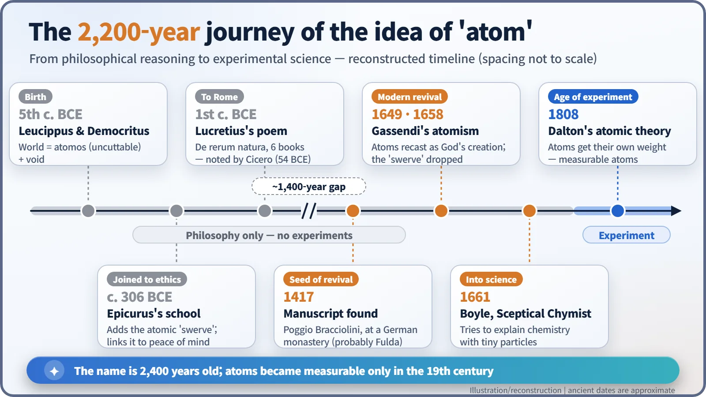
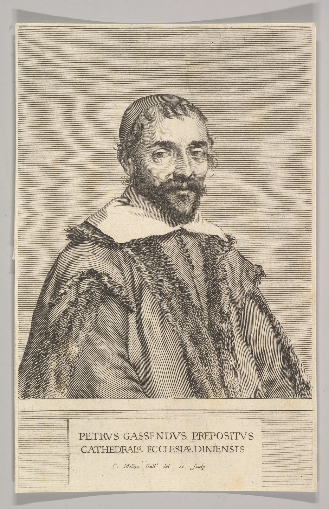

Nuclear History · 001
Cut It, Then Cut It Again: Ancient Atomism from Democritus and Epicurus to Its Revival
Some 2,400 years ago, Greek philosophers decided matter could not be cut forever and named the final grain atomos, the uncuttable.
In the fifth century BCE, Greek thinkers argued that matter cannot be cut forever: it ends in tiny "uncuttable" grains, atomos, moving through empty space. The idea passed through Epicurus and the Roman poet Lucretius, nearly vanished in medieval Europe, and was revived in the seventeenth century. Modern science kept the name "atom" but proved its central claim wrong. [1]
Cut it, then cut it again
Take a sheet of paper and cut it in half. Cut that half in half, then again, and again. Your scissors give up quickly, but in your head you can keep going. So where does it end? Can you cut forever, or do you eventually hit a grain that simply won't be cut?
In the fifth century BCE a few Greek thinkers answered: there is a stopping point. They called that final grain atomos, a Greek word that literally means "uncuttable." Our word "atom" comes straight from it. [1]
A reply to the man who said change was impossible
The idea was born in the middle of a stubborn argument. The philosopher Parmenides had insisted that something cannot come from nothing, and concluded that the change and motion we see around us are an illusion. Ice melting, wood burning: not really happening, he said.
Leucippus (fifth century BCE) and Democritus (born, by ancient reports, around 460 BCE in Abdera, Thrace), who developed Leucippus's views into a system, found an elegant way out. The world, they proposed, is made of countless tiny particles that cannot be cut and never change, plus the void: empty space, literally "nothing." The particles are never created or destroyed. But because they move through the void, coming together and drifting apart, things can change. Parmenides's rule survives, and so does the world we see. [2]

How do atoms differ from one another? Aristotle later explained the theory with letters of the alphabet. A and N differ in shape; AN and NA differ in order; N and Z differ in position, since Z is just N turned on its side. A handful of letters can spell an endless number of words, and in the same way a few kinds of atoms, in different combinations, can make every substance. (These three terms are Aristotle's labels; Democritus's own words seem to have been more dynamic.)
One fragment attributed to Democritus still sounds bold today. In C. C. W. Taylor's English translation of the Greek: "By convention sweet and by convention bitter, by convention hot, by convention cold, by convention colour; but in reality atoms and void." "Convention" here does not necessarily mean "arbitrary"; the point is that tastes and colours belong to how we experience things, not to the atoms themselves. [2]

A word of caution about what we actually know. Democritus is said to have written many books, but none survives complete; we know his ideas only from quotations and reports by later authors. Leucippus is an even fainter figure. One ancient biographer, Diogenes Laertius, reports that Epicurus claimed there never was a philosopher named Leucippus. The "laughing philosopher" image in the painting above is also a later tradition, not a portrait from life. [1]
Epicurus gives the atoms a nudge
Epicurus (341–270 BCE) founded his school in Athens, known as the Garden, around 306 BCE, and took up atomism. He gave atoms a natural tendency to move downward. Later sources add a famous twist: the swerve (in Latin, clinamen). If every atom fell in perfectly straight parallel lines, none would ever collide. So, the story goes, atoms occasionally veer off course by the tiniest amount, for no cause at all, and collisions begin. The swerve was also used to make room for free will. Authoritative later sources credit it to Epicurus, though it does not appear in his own surviving writings. [1]
For Epicurus, atomism was also a route to peace of mind. If the world runs on atoms and void, there is no need to fear angry gods or punishment after death.
One long poem and some 1,400 years of sleep
The fullest account of Epicurus's physics comes from the Roman poet Lucretius (Titus Lucretius Carus, c. mid-90s to mid-50s BCE), author of the six-book poem De rerum natura ("On the Nature of Things"). Almost nothing is known of his life; the only outside mention is a letter Cicero wrote to his brother Quintus in February 54 BCE, praising the poem's brilliance and craft. [3]
The poem's best-known image: sunlight streaming into a dark room, with specks of dust dancing in the beam, offered as a "model and image" of atoms in ceaseless motion. A common overstatement is that Lucretius "discovered Brownian motion." He didn't. Most of that dust is pushed around by air currents, which is not the same thing as the jittering of microscopic particles that physicists later studied.

For centuries afterwards, natural philosophy in Western Europe followed Aristotle, with his four elements; Aristotle had treated atomism as a major rival and criticized it. Lucretius's poem was nearly forgotten. Then in 1417 the humanist Poggio Bracciolini (1380–1459), a papal secretary, found a manuscript in a monastery library in Germany. He could not take it away, so he had a copy made, and the poem began to circulate again. Poggio never named the monastery; Fulda is the most likely candidate. A prize-winning popular history has argued that this find helped launch the modern world, but many historians think that claim is overblown. [3] [6]

The priest who brought atoms back
In seventeenth-century France, the priest, philosopher and astronomer Pierre Gassendi (1592–1655) made reviving Epicurus the longest project of his career. In 1649 he published a Latin translation of the ancient account of Epicurus's life and teachings with a huge commentary, and his full system appeared after his death in his collected works (Lyon, 1658). To make atomism acceptable, since it had long been suspected of atheism, he said God created the atoms and gave them their properties, dropped the swerve, and held that the rational soul is immaterial and immortal. [4]

This "safe" atomism fed into Robert Boyle's The Sceptical Chymist (1661) and into Isaac Newton's picture of matter, which used Gassendi's list of atomic properties almost unchanged. [4]
The name stayed, the meaning changed
Still, it would be a stretch to call the ancient atomists the founders of modern atomic theory. Their atoms were the product of reasoning, not experiment. Atoms got measurable weights only with John Dalton's atomic theory in 1808, and scientists broadly agreed that atoms really exist only after Albert Einstein's theory of Brownian motion (1905) and Jean Perrin's experiments in 1908–1909. Perrin received the 1926 Nobel Prize in Physics for his work on the discontinuous structure of matter. [5]
And the central claim turned out to be wrong. The electron was discovered in 1897 and the atomic nucleus in 1911, showing that atoms have parts. In 1938 came nuclear fission: even the nucleus can split in two. The thing named "uncuttable" is exactly what humanity learned to cut, and to draw energy from. The real legacy of that thought experiment some 2,400 years ago may not be a right answer at all, but a very good question: what is the world made of?